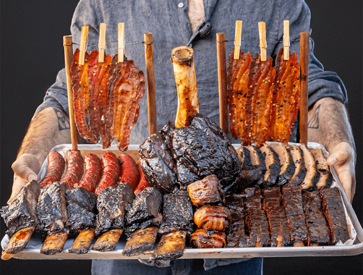
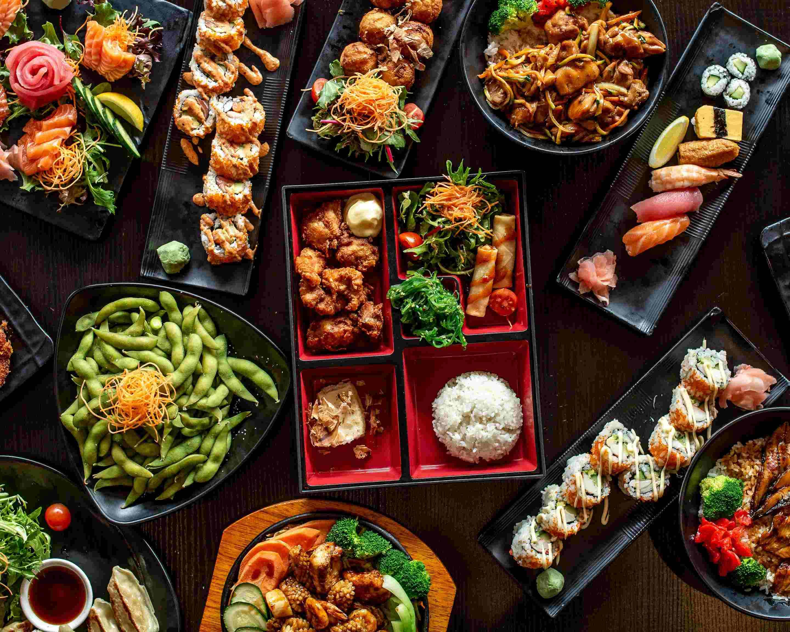
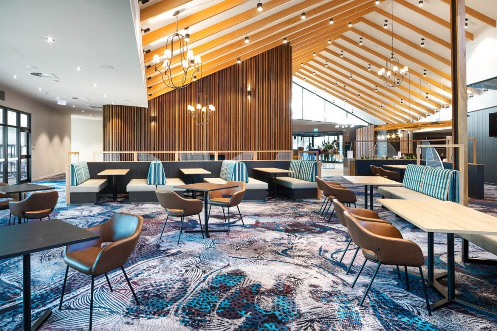
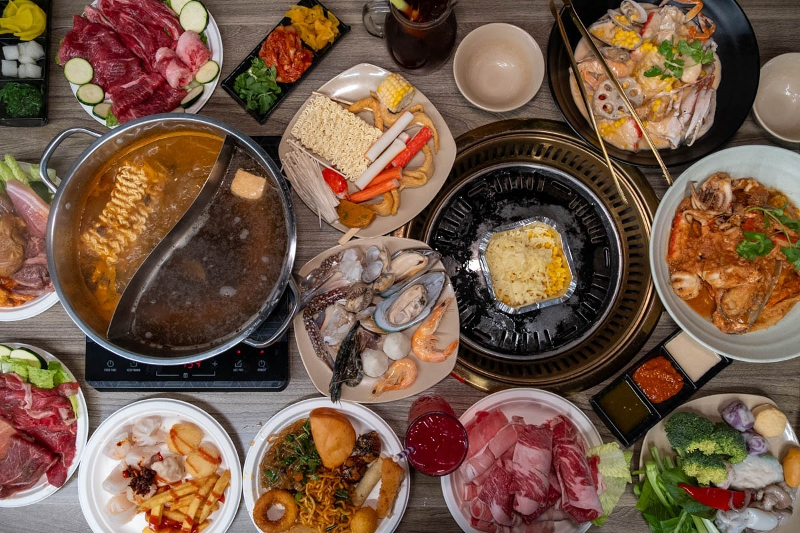
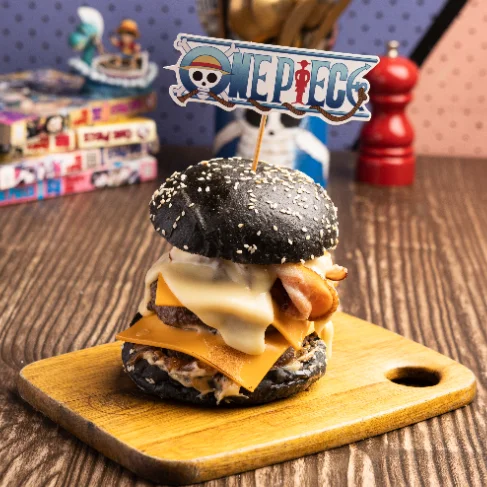

Third Wave Cafe
Cuisine Type: Barbecue Meat
Signature Dishes
- BBQ Meat Platter ($145.40 for 2 people, $265.90 for 4 people, $380.40 for 6 people)
- Thor's Hammer ($199)
- Burgers (Roughly $22 per burger)
Reservation amount:None
Third Wave Cafe Is a Franchised BBQ Meat restaurant with locations in Hawthorn, Moorabbin, Albert Park, that serve slow smoked BBQ meats. They have a large social media following and have great service, as well as sauces that they provide for free to put on your meats. The furniture is comfortable and they are super accommodating. Our personal reccomendation if you are in a group is the BBQ group platters as they have quite alot of food and equate to about $60 per person.

Source: ThirdwaveBBQ.(2026) Third wave Burgers And BBQ
Okami
Cuisine Type:Japanese Food
Signature Dishes
- All you can eat ($42.80 Per Person)
- Chicken Katsu ($24.80)
- Teriyaki Beef ($29.80)
Reservation amount:$42.80 (for all you can eat, you can also order individual items for delivery)
Okami specialises in all you can eat Japanese food, with a location in Chirnside Park. They have Ipads at every table, where you can make orders for food and they send it out for you. Our pick for the best food you can order from them is the chicken katsu, which is crunchy and very juicy. and the teriyaki beef with its great sauce.

Source:UberEats.(2026) Order Okami (Chirnside Park)
Chirnside Park Country Club
Cuisine Type:Bistro food/
Signature Dishes
- Chicken Parmigana ($29.70)
- Angus Porterhouse ($41.90)
- Korean Fried Chicken Burger ($27)
Reservation amount:None
The Chirnside Park Country CLub is an old bistro that has been recently rennovated and serves pub and bistro style food, such as chicken Parmigana, burgers, pasta dishes, etc. On tuesdays, they discount their Parmiganas down to below $20, giving customers a good discount for quite a large amount of chicken.

Source:Best Restaurants Australia.(2026) Chirnside Park Country Club
Ten BBQ Hotpot
Cuisine Type:Korean BBQ
Signature Dishes
- All you can eat ($55.60)
- Seafood Bowl (free, included in all you can eat
- Wagyu Beef (included in all you can eat)
Reservation amount:$10
Ten BBQ is an all you can eat korean BBQ place, with both a grill and a hot pot. Usually, most korean BBQ places only offer the grill, making this one quite good for just a little more. As part of the package, they include a seafood bowl they cook for you where they cook it for you, as well as many types of wagyu beef, free ice cream and shaved ice, and other deserts.

Source: The City Lane.(2026) Ten BBQ and Hotpot, Southbank
KFC
Cuisine Type:Fried Chicken
Signature Dishes
- Zinger Box ($14.95)
- Go Bucket ($4.95)
- Frozen Pepsi ($2.00)
Reservation Amount:None
KFC is a popular fast food chain in Australia, known for its fried chicken. Due to their low prices and being open very often, they are a time and cost effective way to eat. due to having multiple stores in the city as well, there isnt a need to reserve a table or pay a deposit either

Source:Fairfield and Co.(2026) KFC Fairfield becomes Townsville's ninth store for global fried chicken empire
1PlusPiece
Cuisine Type:Burgers
Signature Dishes
- Gear 3 Burger ($17.80)
- Northern Fried Chicken Burger ($18)
- Luffy's Favorite Burger ($12.50)
Reservation amount:None
1PlusPiece is a burger shop in Balwyn and previously Melbourne Central that does great burgers and milkshakes, whilst they are pricey for just being burgers on their own theyre easily the best burgers I've ever had. the Gear 3 Burger is the one i tried, along with a chocolate shake, and you can buy wanted posters from the one piece anime as souvenirs.

Source: One Plus Piece.(2026) (B1) Gear 5 - Just Smash It Burger